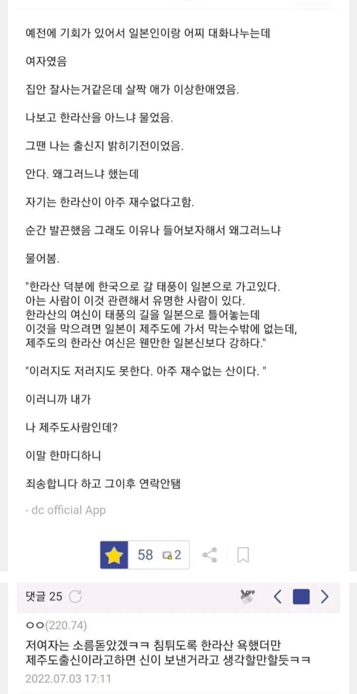
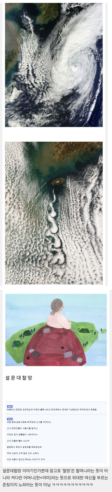
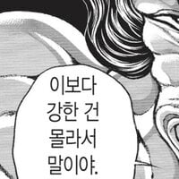
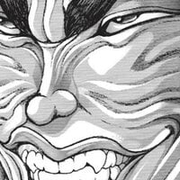

https://www.fmkorea.com/best/10538169416


창조신격이라 한국 전통 신들 중에서도 최상위 랭킹
https://www.fmkorea.com/best/10538169416


창조신격이라 한국 전통 신들 중에서도 최상위 랭킹


나여 한라산
할머니가 아니라 밀프인건가
오 재밌다 관련썰 자세하게 렉카해오거라
커다란 어머니(한+어미) --> 국모?
Grand
Mother....?
할머니맞자너!
일본귀신이 그렇게 독하다더만 격이 다른가보네
더럽지 세진 않음.
강약약강임 ㅈ밥인 인간들만 괴롭힘
카르만볼텍스라고 저구름사진 제주도 밑에 사슬모양 구름을 말함 세계최대규모라고 하내
여름에 열돔 좀 치워야 하는데 태풍이 안 와….
일본에 한라산보다 높은 산 많은데 못 이김?
말그대로 창조신이 아니니깐?
그냥 큰 산에 달라 붙은 신령이나 잡귀 수준 vs 빛이 있으라 정도니깐 ㅋㅋㅋㅋㅋ
우리나라에도 창조신화는 없어. 있었다가 없었는진 모르지만. 우주가 아니라 어떤 '지역'이 생겨난 전설로는 제주할망 전설이 그나마 탄생설화 비슷하긴 하지만,,, 일본 신화는 창조신화가 맞는거 같긴 하던데 역사가 짧아서 딱히 신력을 가지기엔 너무 어려서 그런가?
이상하다 동화책에선 할머니였는데
설 문 대 할 망
비가 적게와서 태풍이라도 오라는거지 진짜 태풍을 바라는건 아님
무속으로 쳐도 헛소리인게 일제시대에 제주도에 신사 많이 만들었음. 일제동안 잘만 쓰다 해방되고 주민들이 때려부숨

후지산 신은 없다니 ㅋㅋ
거 재미로 웃고넘기면 되지 ㅋㅋㅋ
나쁜 신화도 아닌 것 같은디
수상할만큼 한국 신화를 잘 아는 일본인 ㅋㅋ
힘이 너무 쎄서 요즘은 가뭄 오더만
앞으로 설문대할머님이라 부르겠읍니다. 충성충성
산방산 설화가 저 할머니가 앉을자리 필요해서 한라산 꼭대기 똑 떼서 던졌다던가 그랬던거같은데
제주 설화들 뭔가 모아나스러운맛이 있어서 좋음
설문 대여신 인건가
한라후한라바흐!
아일랜드 구판에 제주도는 각종 기이가 넘치는 땅 이라고하자너 ㅋㅋㅋㅋㅋㅋ 그 기이들도 짱들을 이기지못했구만 ㅜ
저런걸 믿는 능지수쥰
입김으로 후 하고 불어내는 거 같네 ㅋㅋ
고마워요 할망ㅋㅋ
정성이 부족하구나
감사합니다
"예절바른 놈, 잘 살거라"
한+어머니면 한마...